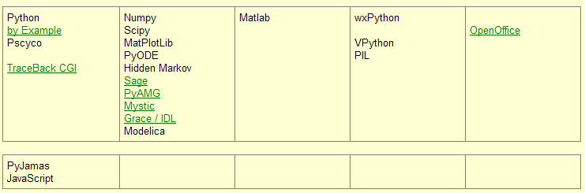
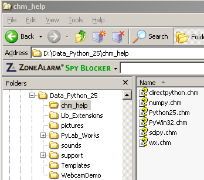
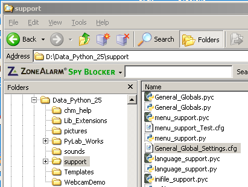
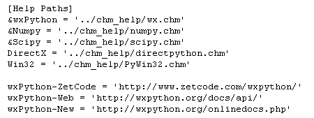

Help Menu  ( may 2009 )
( may 2009 )
Application Designer / Domain Expert / Control Designer / Core Developer
Because documentation and other information is of great importance for PyLab_Works, it's obvious we make all available information easy accessible. Therefor the help menu is dynamically expanded. Unfortunately this task can not fully be automated, but in the future automatic scan and search should make it more easy.
The help menu is in all programs identical, and consists of the following items:
Windows help files (CHM-files) don't work very well on other than Windows OS. Under Ubuntu I got it working, but every time you launch a CHM file, a new instance is opened. A Linux-guru is needed here.
Many Links
This webpage contains a lot of useful links. For the moment I used the first page of my website, I think in the future this might change.

CHM help directory
The chm files in this directory are automatically added to the help menu.

Global Configuration file
In the global configuration file ( which yields for all programs), you can define an arbitrary number of local and web-links. For the local files, now only the htm-files and chm-files are recognized, but in the future other files, like doc, pdf should be recognized.
Each user should adapt this file ( ../support/General_Global_Settings.cfg ) !!

The file is simply build as a Windows ini-file (with another extensie, to prevent windows from restoring it) as shown below. At the moment only html (web and local) and CHM-files are supported, but in the bear future this will be extended with pdf, doc, ...).
